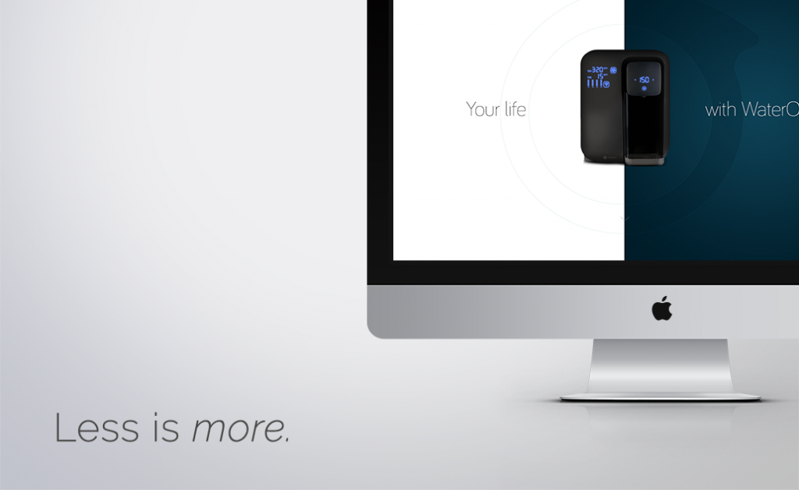

Why has minimalism and minimalist web design become such a fixture within today’s digital solutions? Driven largely by consumer experience, technology and design trends, minimalist web design has been embraced by several influential companies including Apple, Google and Microsoft. The less is more approach has become an aesthetically pleasing and functional way for businesses to communicate value proposition, products, services and even culture across web, print and mobile.
With so many other businesses vying for your customers’ attention and all the distraction of email, web and social, a minimalist website can be quite refreshing for a consumer that’s accustomed to or even immune to an over saturated digital approach.
Why Minimalism Works
Minimalism is a visual aesthetic characterized by its simplicity. Popularized in the mid-20th century by American artists like Frank Stella and Kenneth Noland, minimalism has become a staple of modern design. Since the early-2000s it has been an important part of graphic and digital design, often discussed in tandem with flat design.
Works of art at the Kenneth Noland exhibition
A minimalist web design focuses on what the consumer actually needs then clearly communicates solutions to those needs. By guiding consumers to pertinent information like what benefits your business can offer, its mission and goals and specific calls to action, you save your consumer valuable time which in turn makes it easier for them to form a relationship with your brand.
Minimalist web design can benefit your SEO too. Google has offered businesses advice after releasing its Google Panda algorithm update in 2011. The advice is still valuable, since “Panda” is now a fixture of its search functionality. Basically Google’s algorithms are aimed at helping people find “high-quality” websites by reducing rankings of low quality content. So removing low quality pages, merging or improving the content of individual shallow pages could eventually help the rankings of your higher quality content.
Minimalist web designs have great benefits and are also functional because they can:
- Optimize page load times, so consumers access content faster
- Function well across desktop and mobile channels—increasingly important as more consumers access online content through smartphones and wearables
- Streamline website updates and maintenance
What Does Minimalist Web Design Look Like?

Nielsen Norman Group, a market research firm specializing in user experience, conducted a study that evaluated more than 100 minimalist websites. This is what they had in common:
- Functionality and design stripped to its bare necessities
- Less emphasis on skeuomorphic design techniques like raised, sunken or hollow textures
- Limited or purely monochromatic color palettes
- More white (negative) space
- Marked use of typography or images
Minimalist Web Design Tips
While minimalist web design offers a lot of advantages to today’s consumers, there can be challenges if not implemented correctly. Minimalist web design and interfaces are more likely to eschew common cues like blue underlined text normally associated with clickable hyperlinks, in favor of other creative aesthetics. You can offset potential confusion by aiding consumers with features that help them understand how to use your website. Strategic use of color or interactive functionality that responds to cursor or mouse movement can show there is more content to access.
Your website needs to function well and provide value. Spend time learning what people want from your business, whether that means pouring over website analytics or surveying the market. Use that insight as a guiding point to develop a website that simplifies brand messaging and focuses on content that matters most to consumers. With nearly 30% of smartphone users switching to another website or mobile app if it doesn’t satisfy their needs, a minimalist approach to your web design may in fact help you craft a more successful customer-focused approach to branding and your most critical marketing tool.